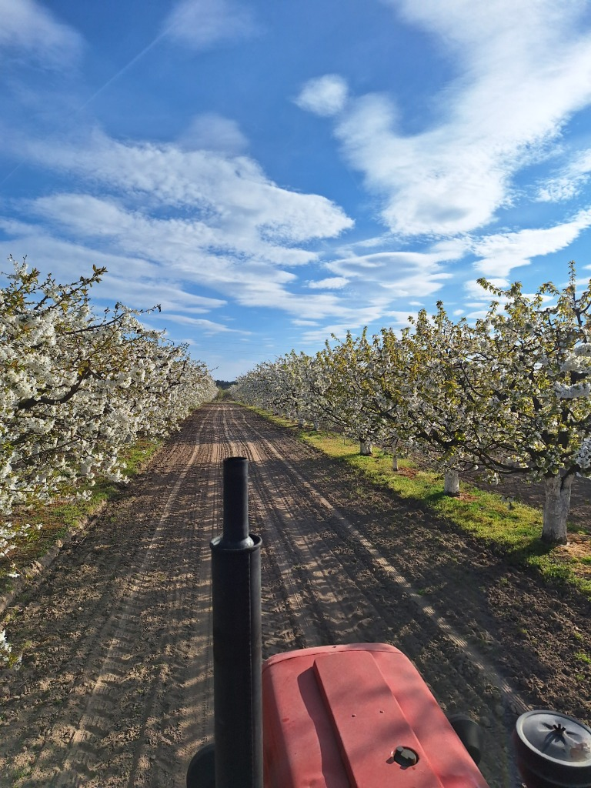
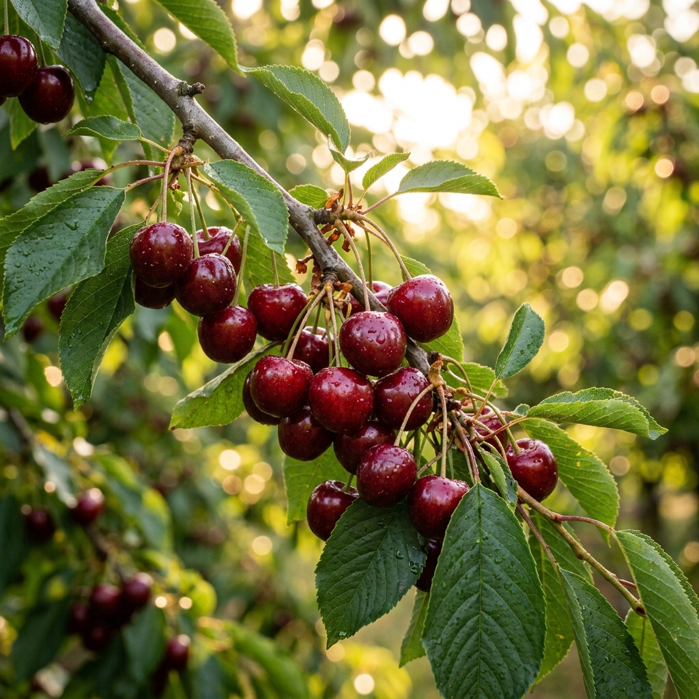
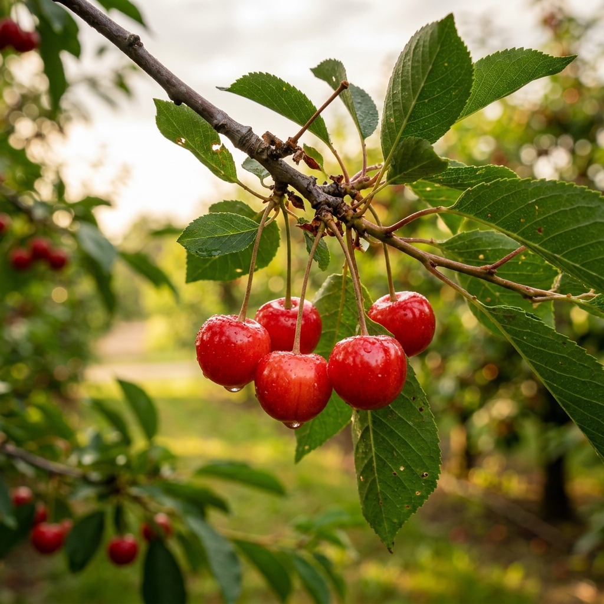
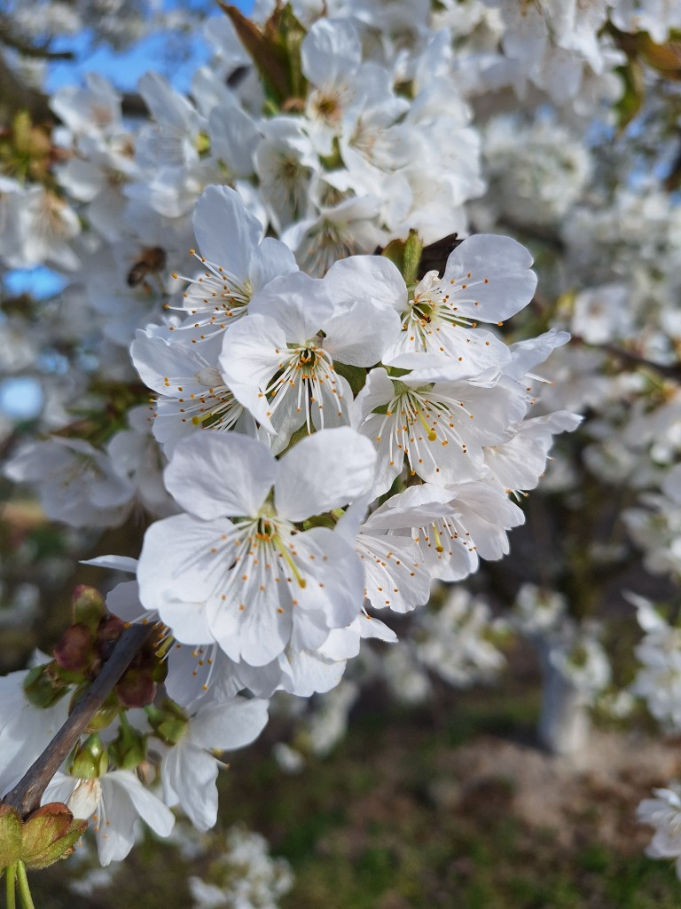

Zerwane rano, u Ciebie po południu. Żadnych pośredników, żadnych magazynów — tylko owoce prosto z drzewa do Twoich rąk.
Zanim czereśnia trafi na targowy stragan, przechodzi przez tyle rąk, że traci świeżość, smak i połowę witamin. My to zmieniamy.
Każdy etap to utrata świeżości, kolejne uszkodzenia mechaniczne i czas w nieoptymalnych warunkach. Owoc, który kupujesz na targu, może mieć nawet 2 tygodnie od zerwania.
U nas nie ma żadnych pośredników. Zrywamy owoce tego samego dnia rano, a Ty odbierasz je po południu. Proste, uczciwe i świeże. Tak jak powinno być.
„Kupując na targu, kupujesz owoc, który przeszedł przez giełdę, pośrednika,
chłodnię i sprzedawcę. Może mieć nawet dwa tygodnie i być zerwany niedojrzały.
U nas zrywamy czereśnie rano — a Ty jesz je tego samego dnia po południu.
Bez pośredników, bez magazynów. Smak, jaki pamiętasz z dzieciństwa
— prosto z drzewa do ręki. To jest różnica, którą poczujesz od pierwszego gryza."
Oferujemy najlepsze odmiany czereśni i wiśni, starannie wyselekcjonowane i pielęgnowane, by zapewnić najwyższą jakość.

Nasze czereśnie to synonim doskonałości — duże, mięsiste, o intensywnym, słodkim smaku. Zbieramy je ręcznie, dbając o każdy owoc. Idealne do bezpośredniego jedzenia, na desery, kompoty i przetwory.
Wczesna odmiana o dużych, ciemnoczerwonych owocach. Słodka i soczysta.
📅 CzerwiecNajchętniej kupowana odmiana. Duże, twarde owoce o wybornym smaku.
📅 LipiecOdmiana o pięknych, dużych owocach. Słodka, soczysta i aromatyczna — doskonała na deser.
📅 Czerwiec–LipiecPóźna odmiana o ciemnoczerwonych, chrupiących owocach. Doskonała trwałość i bogaty, wyrazisty smak.
📅 Lipiec
Nasze wiśnie to kwintesencja polskiego sadu — aromatyczne, soczyste, z idealną równowagą kwaskowości i słodyczy. Doskonałe na kompoty, dżemy, nalewki, ciasta i przetwory domowej roboty.
Królowa polskich wiśni i nasza duma. Duże, ciemnoczerwone owoce o intensywnym, wyrazistym smaku z idealnym balansem kwasowości i słodyczy. Doskonała na kompoty, dżemy, nalewki wiśniowe, ciasta i wszelkie przetwory. Odmiana sprawdzona przez pokolenia polskich sadowników — niezawodna, obficie owocująca i po prostu najlepsza.
📅 LipiecNasz sad w Wyskoci Małej (niedaleko Kościana) to rodzinna tradycja sięgająca 1986 roku. Od prawie 40 lat, z pokolenia na pokolenie, pielęgnujemy nasze drzewa, dbając o to, by każdy owoc był doskonały. Stawiamy na zrównoważoną uprawę i nowoczesne metody sadownicze z poszanowaniem natury.
Z dbałością o każdy detal
Tradycja od 1986 r.
Prosto z naszego sadu
Selekcja ręczna

Zamów czereśnie lub wiśnie bezpośrednio od rolnika z Wyskoci Małej (ok. Kościana). Zrywamy wyłącznie na Twoje zamówienie. Oferujemy dowóz prosto do Twoich drzwi bez wychodzenia z domu, lub wygodny odbiór osobisty.
Nie możesz przyjechać? Żaden problem — dowozimy świeże owoce prosto pod Twoje drzwi. Zadzwoń lub napisz maila, żeby ustalić szczegóły dostawy.